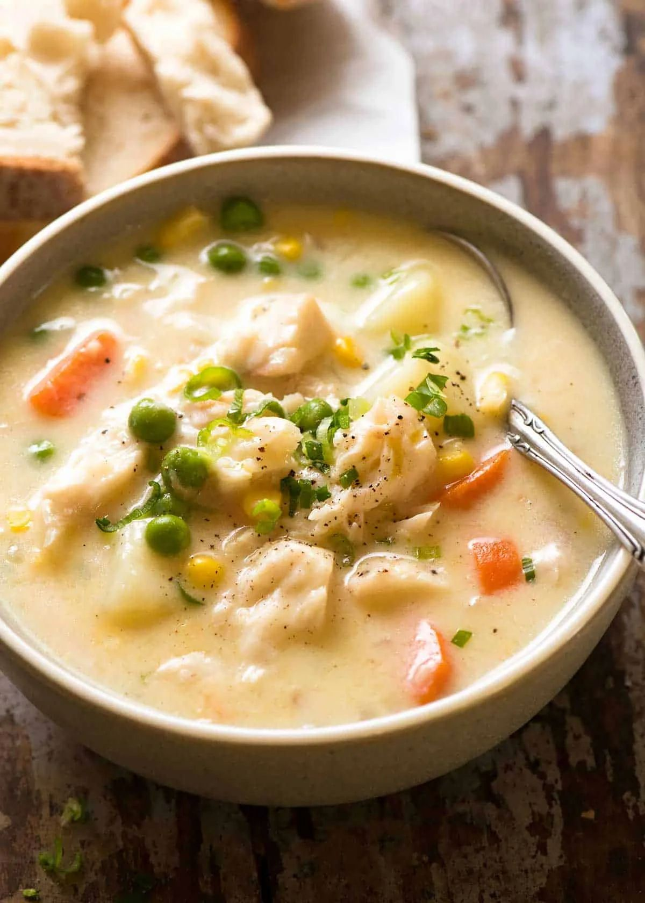

Fish Chowder

- Meal
- Dinner
- Serves
- 6
- Protein
- fish (white fish)
- Cook
- stovetop · 15 min active / 35 min total · easy
- Make-ahead / leftovers
- no / yes
- Mediterranean
- yes
- WW tier
- moderate
- Status
- Trying out (probation)
Allergy: Contains fish or shellfish — not for a fish-allergic eater; same-base chicken chowder is in this card
RecipeTin Eats' quick fish chowder — a light milk-and-stock base (no cream) with potato, carrot, corn, and peas, chunks of white fish dropped in for the last 3 minutes. Cozy fall soup with crusty bread; uses any frozen white fish.
Ingredients
- 4 Tbsp unsalted butter
- 3 garlic cloves, minced
- 1 onion, finely chopped
- 3 small carrots, halved and sliced 1/5 inch
- 1/2 cup dry white wine (optional — skip and add 1/2 cup more stock)
- 1/3 cup flour
- 2 1/2 cups low-sodium chicken stock (not fish stock or clam juice — see Notes)
- 3 3/4 cups milk
- 2 1/2 cups potato in 1/2-inch cubes (~1 1/2 large potatoes)
- 1 1/4 cups frozen or canned corn
- 3/4 tsp salt, plus more to taste
- Pepper
- 1.5 lb skinless white fish (cod, pollock, haddock), 3/4-inch pieces
- 1 1/4 cups frozen peas
- Sliced green onions; crusty bread
Fish-free fallback (same base)
- 1 cup diced cooked chicken (rotisserie or leftover)
Method
- Melt the butter in a large pot over medium. Cook the garlic and onion 5 minutes until translucent. Stir in the carrots.
- If using wine, raise to high, add it, and boil until mostly gone.
- Add the flour and stir 30 seconds. Slowly pour in the stock while stirring, then the milk.
- Add potato, corn, salt, and pepper. Bring to a simmer, then lower to gentle and cook ~8 minutes until the potato is almost tender.
- Ladle the fish-free portion (about 1 1/2 cups) into a small saucepan, add the fish-free chicken and a few peas, and keep it at a gentle simmer.
- Add the fish and peas to the big pot; simmer 3 minutes until the fish just flakes.
- Season, loosen with a splash of milk if thick, and serve with green onions and bread.
Notes
- Scaled ×1.25 from RecipeTin's serves-5 (1.2 lb fish).
- Stock: Nagi allows fish stock, clam juice, or chicken stock. Use chicken stock so the base stays fish-free.
- Fish-free swap: the fish-free chowder is ladled into its own pot before any fish goes in.
- Lean white fish — no omega-3. Doesn't count toward the fatty-fish quota. Good tilapia-swap-week alternative.
- Mediterranean ✓ (just): fish, vegetables (onion, carrot, corn), potatoes — 3 of 4; butter + milk base misses the olive-oil point. Not cream, so moderate rather than heavy.